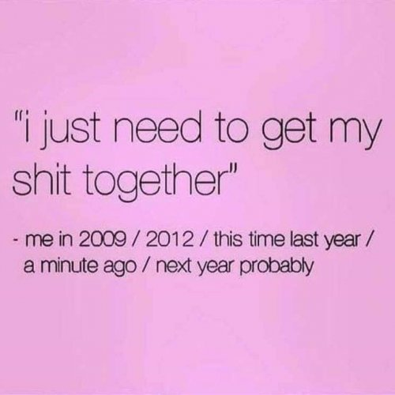

And all the men and women, merely players”
–William Shakespeare
“I admit it's fun
To smear my face with paint,
Causing ev'ryone
To think I'm what I ain’t,
Life upon the wicked stage
Ain't ever what a girl supposes”
--Oscar Hammerstein
Oh look, resolution time once again! Self improvement time. Annual How’mIDoin? time.
Time to find love, get the better career, learn life’s purpose. Time to learn a new word every day, skip gluten and sugar, meditate, work out. Time to figure out how to transcend that Me-sucker.
Oh let’s face it, none of that is probably going to happen.
I mean, year after year we see our flaws and insufficiency. And year after year, we never actually get to making with the sufficiency.
You’d think with all these many many New Year opportunities, that we would have improved ourselves by now.
What’re we waiting for?
Well, at least we are clear about what needs fixing; that’s a good first step, right? We can’t fix what we don’t know is broken.
Although, how do we know? What is it does this important self-evaluating, this necessary reporting on not-rightness? What tells us we need to being a better person, thinner, kinder, less failure-prone, better able to cope with feelings?
Well, that would be Me. I review me, and I see what I need to alter.
ME. The self. The personality,
The very thing that we’re supposed to be changing.
The poor grade is given to itself, by itself.
Um…. What?
I mean, how reliable as an evaluator is the Me likely to be about itself? How can it look objectively, without skewed filters and agendas, to see what is needed and what should improve?
Perhaps New Year’s resolutions are an annual failure because they’re not meant to actually change anything. Perhaps they’re just a way to enable the self to keep the focus on its one great love- itself.
And perhaps, when we focus on something- when we evaluate what that something supposedly needs- then we are implicitly acknowledging that we are outside the thing we’re evaluating.
Meaning, we know we are not it. We know that Me we hope to change is not actually us.
Which means every time we make a New Years resolution, we are admitting we know the self is not what we are.
Still, we pretend. And we pretend with gusto. So leaning in, we say that not only is the flawed self, “Me,” but cleaning it up and improving it is our own responsibility.
No one can do it but us.
Of course.
Oh the power. Oh the control.
For our very being, for our personality, for all situations and existence pertaining to self.
It all comes down to us. The center of everything.
Even though, let’s face it, we completely suck at this job.
I mean here we are, perpetually resolving to change, new year after new year, and here we are, perpetually failing to change, new year after new year.
If improving this pretend self-thing is indeed our job, then we're exhibiting a breath-taking incompetence right there.
Unsurprisingly that doesn’t feel great.
So maybe we could at least give ourselves a break and acknowledge that, if it’s possible to transcend and change the self at all, we aren’t what does that.
That would seem kinder to us.
Since we didn’t write this play. And if we were the authors, this isn’t how we would have the story go.
We know this because we keep trying to change the story. We keep having the arrogance to insist that this show, which is not written by us, is not good enough as is.
Gosh humans are know-it-alls.
But that's the game here. And play-acting is fun. We like putting on a show in the barn.
So we probably will continue making resolutions for things that are out of our hands and out of our ability to even perceive. We probably will continue to keep the Me on center stage. We probably will continue to keep trying to improve a self story that we didn’t create.
Even though we know that improving fictions never fixes anything real.
Life upon the wicked stage goes on.
As is.
The playwright doesn’t seem to have any need for the characters to change.
Luckily this makes for amazing, surprising, never-predictable entertainment.
Luckily this makes for a far better show than we could ever produce ourselves. And for far more fun and sufficiency than merely wishing for an arbitrarily different first two weeks in January.
And so it is, lovely readers, that I wish you happy new year.
And happy life as is.
And happy good enough,
here upon existence’s
wicked stage.
"We are already divine and we are already perfect - as we are. No improvement is needed. God never creates anybody imperfect.” --Osho
“What if we said, “This is the way it is; this is what it means to be human," and decided to sit down and enjoy the ride?” --Pema Chödrön
“When it’s all over, it’s time to be a human being in the world again, and that means slipping back into costume and getting back on stage. But now you’re actually in the audience, watching the drama. I could never mistake the play for reality again, or my character for my true state "
--Jed McKenna

to get your Mind-Tickled every week.